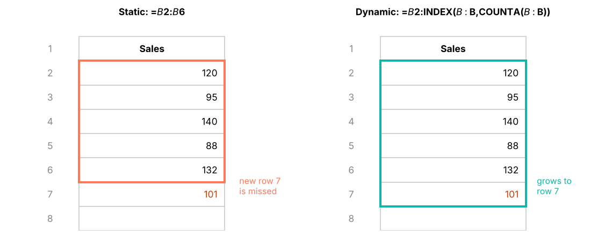

Work confidently with dates and times (DATE, EOMONTH, EDATE, WORKDAY, NETWORKDAYS, WEEKDAY, WEEKNUM, DATEDIF, fiscal quarters), clean up numbers with INT, MOD, ROUND, CEILING and FLOOR, and make formulas readable with static and dynamic named ranges and LET.
● Live classes 7–8✦ Excel for Microsoft 365, 2026Intermediate⏱ 120 min
Excel stores a date as the number of days since 1 January 1900 (that day is 1). A time is a fraction of a day: 12:00 noon is 0.5 and 06:00 is 0.25. A date with a time is simply a whole number plus a fraction.
XWhat is really stored
A
B
C
1
You see
Stored as
Explanation
2
27-04-2026
46139
Days since 1-Jan-1900
3
12:00
12:00
Half a day
4
06:30
0.2708
6.5 hours ÷ 24
5
27-04-2026 18:00
46139.75
Date + time
B2=A2
B3=TIME(12,0,0)
B4=TIME(6,30,0)
B5=DATE(2026,4,27)+TIME(18,0,0)
This is why date arithmetic works:
XDate arithmetic
A
B
C
D
E
1
Order date
Ship date
Days to ship =B2-A2
Due date (+30 days)
Overdue? (as of 15-Jun-2026)
2
27-04-2026
02-05-2026
5
27-05-2026
Overdue
3
20-05-2026
21-05-2026
1
19-06-2026
OK
4
01-06-2026
08-06-2026
7
01-07-2026
OK
C2=B2-A2
D2=A2+30
E2=IF(DATE(2026,6,15)>D2,"Overdue","OK")
Each pattern is copied down/across to the other cells in its column.
TipTODAY() and NOW()
=TODAY() returns today's date and =NOW() the date and time. They are volatile: they recalculate every time the workbook changes, so results move every day. For reports that must not change, type the "as of" date into a cell and refer to it, as in the overdue example above. Shortcuts: Ctrl + ; types today's date as a fixed value.
Building and taking apart dates
Function
Returns
Example (A2 = 27-04-2026)
Result
DATE(y, m, d)
A date from parts
=DATE(2026,4,27)
27-04-2026
YEAR, MONTH, DAY
Parts of a date
=MONTH(A2)
4
WEEKDAY(date, 2)
1 = Monday … 7 = Sunday
=WEEKDAY(A2,2)
1
WEEKNUM(date, 2)
Week of the year (weeks start Monday)
=WEEKNUM(A2,2)
18
ISOWEEKNUM(date)
ISO 8601 week number
=ISOWEEKNUM(A2)
18
TEXT(date, "mmm")
Month name as text
=TEXT(A2,"mmmm")
April
EOMONTH(date, n)
Last day of the month n months away
=EOMONTH(A2,0)
30-04-2026
EDATE(date, n)
Same day n months later
=EDATE(A2,3)
27-07-2026
DATEVALUE(text)
Converts date text to a real date
=DATEVALUE("27-Apr-2026")
46139
XDate parts and month boundaries
A
B
C
D
E
F
G
H
1
Date
Year
Month
Day
Weekday (Mon=1)
Month end
First of month
+3 months
2
27-04-2026
2026
4
27
1
30-04-2026
01-04-2026
27-07-2026
3
31-01-2026
2026
1
31
6
31-01-2026
01-01-2026
28-02-2026
4
29-02-2024
2024
2
29
4
29-02-2024
01-02-2024
28-02-2025
B2=YEAR(A2)
C2=MONTH(A2)
D2=DAY(A2)
E2=WEEKDAY(A2,2)
F2=EOMONTH(A2,0)
G2=EOMONTH(A2,-1)+1
H2=EDATE(A2,3)
Each pattern is copied down/across to the other cells in its column.
Notice that EDATE handles month ends correctly: 31-Jan + 1 month = 28-Feb (2026 is not a leap year), and 29-Feb-2024 + 12 months = 28-Feb-2025.
Working days
Function
Use
NETWORKDAYS(start, end, [holidays])
Count Mon–Fri days between two dates (inclusive) minus holidays
NETWORKDAYS.INTL(start, end, weekend, [holidays])
Choose weekend days: 11 = Sunday only, "0000011" = Sat + Sun
WORKDAY(start, days, [holidays])
The date after adding n working days
WORKDAY.INTL(start, days, weekend, [holidays])
Same with a custom weekend
XSLA and delivery planning (holidays in G2:G4)
A
B
C
D
E
F
G
1
Ticket
Opened
Closed
Working days =NETWORKDAYS(B2,C2,$G$2:$G$4)
Due (+5 working days)
Holidays
2
T-101
10-08-2026
18-08-2026
7
17-08-2026
15-08-2026
3
T-102
16-10-2026
23-10-2026
5
26-10-2026
20-10-2026
4
T-103
06-11-2026
10-11-2026
4
12-11-2026
08-11-2026
D2=NETWORKDAYS(B2,C2,$G$2:$G$4)
E2=WORKDAY(B2,5,$G$2:$G$4)
D3=NETWORKDAYS(B3,C3,$G$2:$G$4)
E3=WORKDAY(B3,5,$G$2:$G$4)
D4=NETWORKDAYS.INTL(B4,C4,11,$G$2:$G$4)
E4=WORKDAY.INTL(B4,5,11,$G$2:$G$4)
T-103 uses a Sunday-only weekend (code 11), common in Indian factories and retail. The holiday on 15-Aug-2026 falls on a Saturday, so it does not change T-101's count of working days.
Age, tenure and durations
DATEDIF(start, end, unit) is a hidden function (no tooltip) that returns complete years, months or days between two dates.
Unit
Returns
"y"
Complete years
"m"
Complete months
"d"
Days
"ym"
Months after removing complete years
"md"
Days after removing complete months
XTenure as of 31-Mar-2026 (in E1)
A
B
C
D
E
F
1
Employee
Join date
Years
Months after years
Tenure label
31-03-2026
2
Kavya Iyer
28-02-2016
10
1
10 yrs 1 mths
3
Imran Reddy
14-12-2019
6
3
6 yrs 3 mths
4
Saanvi Rao
18-02-2025
1
1
1 yrs 1 mths
C2=DATEDIF(B2,$F$1,"y")
D2=DATEDIF(B2,$F$1,"ym")
E2=C2&" yrs "&D2&" mths"
Each pattern is copied down/across to the other cells in its column.
(Cell F1 holds the date 31-03-2026.) For fractional years use =YEARFRAC(B2,$F$1), for example 10.09 years.
Fiscal years and quarters
Calendar quarter: ="Q"&ROUNDUP(MONTH(A2)/3,0). Many organisations use a different financial year:
Year type
Q1
Formula for the quarter number
Calendar
Jan–Mar
=ROUNDUP(MONTH(A2)/3,0)
India (FY Apr–Mar)
Apr–Jun
=ROUNDUP(MOD(MONTH(A2)-4,12)/3+0.01,0) or =CHOOSE(MONTH(A2),4,4,4,1,1,1,2,2,2,3,3,3)
US federal (FY Oct–Sep)
Oct–Dec
=CHOOSE(MONTH(A2),2,2,2,3,3,3,4,4,4,1,1,1)
XCalendar, Indian FY and US FY quarters
A
B
C
D
E
1
Date
Calendar Q
India FY quarter
India FY label
US FY quarter
2
10-02-2026
Q1
Q4
FY26
Q2
3
27-04-2026
Q2
Q1
FY27
Q3
4
03-11-2026
Q4
Q3
FY27
Q1
B2="Q"&ROUNDUP(MONTH(A2)/3,0)
C2="Q"&CHOOSE(MONTH(A2),4,4,4,1,1,1,2,2,2,3,3,3)
D2="FY"&(YEAR(A2)+(MONTH(A2)>=4))-2000
Each pattern is copied down/across to the other cells in its column.
In the Indian convention, 27-Apr-2026 falls in FY27 (April 2026 – March 2027), quarter Q1.
Times
Function
Example
Result
TIME(h, m, s)
=TIME(14,30,0)
14:30
HOUR, MINUTE, SECOND
=HOUR(A2)
14
Duration in hours
=(end-start)*24
8.5
Duration beyond 24 h
Format [h]:mm
37:30
Shifts past midnight
=MOD(end-start,1)
Works when end is the next day
A very common clean-up task: a system exports times as plain numbers like 1430 meaning 14:30. Convert them with INT and MOD:
XConvert 1430-style numbers into real times
A
B
C
D
E
1
Raw
Hours =INT(A2/100)
Minutes =MOD(A2,100)
Time =TIME(INT(A2/100),MOD(A2,100),0)
Shift length (to B6)
2
930
9
30
09:30
8.75
3
1430
14
30
14:30
4
2245
22
45
22:45
5
5
0
5
00:05
6
1815
18
15
18:15
B2=INT(A2/100)
C2=MOD(A2,100)
D2=TIME(INT(A2/100),MOD(A2,100),0)
E2=MOD(D6-D2,1)*24
Each pattern is copied down/across to the other cells in its column.
Number functions
Function
What it does
Example
Result
INT(n)
Rounds down to the integer
=INT(-7.6)
−8
TRUNC(n, [d])
Cuts off decimals (towards zero)
=TRUNC(-7.6)
−7
ROUND(n, d)
Normal rounding
=ROUND(7.456,2)
7.46
ROUNDUP(n, d)
Always away from zero
=ROUNDUP(7.401,0)
8
ROUNDDOWN(n, d)
Always towards zero
=ROUNDDOWN(7.99,0)
7
ROUND(n, -3)
Round to thousands
=ROUND(123456,-3)
123000
MROUND(n, m)
Nearest multiple
=MROUND(17,5)
15
CEILING.MATH(n, m)
Up to the next multiple
=CEILING.MATH(23,7)
28
FLOOR.MATH(n, m)
Down to the previous multiple
=FLOOR.MATH(23,7)
21
MOD(n, d)
Remainder
=MOD(28,3)
1
QUOTIENT(n, d)
Integer part of a division
=QUOTIENT(28,3)
9
ABS(n)
Absolute value
=ABS(-450)
450
SIGN(n)
−1, 0 or 1
=SIGN(-450)
−1
SQRT(n)
Square root
=SQRT(144)
12
POWER(n, p)
Power (same as ^)
=POWER(25,2)
625
XRounding functions side by side
A
B
C
D
E
F
G
H
1
Value
INT
ROUND 0
ROUNDUP 0
ROUNDDOWN 0
ROUND 2
CEILING.MATH to 5
FLOOR.MATH to 5
2
7.456
7
7
8
7
7.46
10
5
3
-7.456
-8
-7
-8
-7
-7.46
-5
-10
4
23.5
23
24
24
23
23.5
25
20
B2=INT(A2)
C2=ROUND(A2,0)
D2=ROUNDUP(A2,0)
E2=ROUNDDOWN(A2,0)
G2=CEILING.MATH(A2,5)
H2=FLOOR.MATH(A2,5)
Each pattern is copied down/across to the other cells in its column.
Practical uses
Packaging: boxes needed for 523 items at 24 per box = =CEILING.MATH(523,24)/24 or =ROUNDUP(523/24,0) → 22.
Price points: round prices up to the next 99: =CEILING.MATH(A2,100)-1 turns 1,234 into 1,299.
Split profit and loss into two columns with ABS:
XProfit and Loss columns
A
B
C
D
1
Store
Profit / Loss
Profit
Loss
2
Pune
45200
45200
0
3
Delhi
-12800
0
12800
4
Kochi
3300
3300
0
5
Patna
-7600
0
7600
6
Total
28100
48500
20400
C2=IF(B2>0,B2,0)
D2=IF(B2<0,ABS(B2),0)
B6=SUM(B2:B5)
C6=SUM(C2:C5)
D6=SUM(D2:D5)
Each pattern is copied down/across to the other cells in its column.
Named ranges
A name is a label for a cell, a range, a constant or a formula. =SUM(Sales) is easier to read and audit than =SUM(Data!$O$2:$O$6324).
Static named ranges
Method
How
Name Box
Select the range, click the Name Box (left of the formula bar), type GST_Rate, press Enter
Define Name
Formulas → Define Name: set the name, scope (workbook or one sheet) and comment
Create from Selection
Select a table with headers → Formulas → Create from Selection (Ctrl + Shift + F3) → Top row: one name per column
Name Manager
Formulas → Name Manager (Ctrl + F3) to edit, delete or find broken names
Rules: names start with a letter or underscore, contain no spaces (use _), cannot look like a cell address (Q1 or FY26 are not allowed) and are not case-sensitive.
XFormulas with names (GST_Rate = F1, Qty and Price are named columns)
A
B
C
D
E
F
1
Qty
Price
Amount =Qty*Price
With GST =Qty*Price*(1+GST_Rate)
18%
2
4
1250
5000
5,900.00
3
10
299
2990
3,528.20
4
2
8999
17998
21,237.64
C2=A2*B2
D2=A2*B2*(1+$F$1)
C3=A3*B3
D3=A3*B3*(1+$F$1)
C4=A4*B4
D4=A4*B4*(1+$F$1)
(F1, the yellow cell, is named GST_Rate. With names defined, the formula in D2 reads =Qty*Price*(1+GST_Rate).)
Dynamic named ranges
A static name like =$B$2:$B$100 does not grow when you add row 101. A dynamic named range expands automatically, which keeps charts, validation lists and formulas up to date.
Method
Refers to
Notes
Excel Table (best)
=tblSales[Amount]
Automatic, no formula needed
OFFSET + COUNTA
=OFFSET(Data!$B$2,0,0,COUNTA(Data!$B:$B)-1,1)
Classic; volatile (recalculates often)
INDEX + COUNTA
=Data!$B$2:INDEX(Data!$B:$B,COUNTA(Data!$B:$B))
Not volatile; preferred over OFFSET
Spill reference
=Data!$H$2#
Points to a dynamic-array result

A static range stays fixed; a dynamic range grows with the data.
LET: names inside one formula
LET (Microsoft 365) assigns names to values inside a formula. It makes long formulas readable and faster, because each part is calculated once.
Without LET: =IF(SUMIFS(F:F,C:C,"Finance")/COUNTIFS(C:C,"Finance")>90000,"High","Normal")
LAMBDA goes one step further and lets you create your own reusable functions; see Lesson 12.
Case: date analysis on Superstore
How long do orders take to ship, by ship mode, and which weekday gets the most orders? In Excel you would add columns =ship_date-order_date and =TEXT(order_date,"ddd") and pivot them. Here are the real answers:
mean min max
ship_mode
First Class 1.5 1 2
Same Day 0.0 0 0
Second Class 3.0 2 4
Standard Class 5.5 4 7
fy
FY23 169
FY24 952
FY25 1114
FY26 965
Summary
Key takeaways
Dates are whole numbers (days since 1-Jan-1900); times are fractions of a day. Subtract dates to get days; multiply time differences by 24 for hours.
EOMONTH and EDATE handle month ends correctly; NETWORKDAYS and WORKDAY (with .INTL for custom weekends) handle working days and holidays.
DATEDIF gives complete years/months; build fiscal quarters with CHOOSE(MONTH(…),…).
INT rounds down, TRUNC cuts towards zero, ROUNDUP/ROUNDDOWN force direction, CEILING.MATH/FLOOR.MATH round to multiples, MOD gives remainders.
Named ranges make formulas readable; use Tables or INDEX-based names for dynamic ranges, and LET for names inside a formula.
Quick quiz6 questions · tap an answer to check it
1. A1 contains 27-04-2026 and B1 contains 02-05-2026. What does =B1-A1 return?
Answer: B. Dates are numbers, so subtracting gives the number of days.
2. Which formula returns the last day of the month for the date in A2?
Answer: B. EOMONTH(date,0) returns the month end; the other options fail for 30-day months or February.
3. What does =INT(-3.2) return?
Answer: B. INT always rounds down (towards minus infinity). TRUNC(-3.2) would give −3.
4. Which formula converts the number 1745 into the time 17:45?
Answer: C. INT(1745/100) = 17 hours and MOD(1745,100) = 45 minutes.
5. Why is an INDEX-based dynamic named range often preferred to OFFSET?
Answer: B. Both grow, but OFFSET is volatile.
6. In the Indian financial year, which quarter is 15-January?
Answer: D. FY runs April–March, so January–March is Q4.
ExerciseHR date calculations
Using employees_small.csv and an "as of" date of 31-03-2026 in a cell: (1) tenure in complete years; (2) the probation end date (6 months after joining); (3) the first working day after the probation end; (4) the joining quarter in the Indian FY.
Show solution
With join date in E2 and the as-of date in $J$1:
(1) =DATEDIF(E2,$J$1,"y")
(2) =EDATE(E2,6)
(3) =WORKDAY(EDATE(E2,6)-1,1) (the first working day on or after the probation end)
(4) ="Q"&CHOOSE(MONTH(E2),4,4,4,1,1,1,2,2,2,3,3,3)
Interview cornerQuestions you may be asked
Q: How does Excel store dates and times?
Dates as serial numbers counting days from 1-Jan-1900; times as fractions of a day. This makes arithmetic, sorting and formatting consistent.
Q: How do you count working days between two dates excluding holidays?NETWORKDAYS(start, end, holidays) or NETWORKDAYS.INTL with a custom weekend code.
Q: What is a dynamic named range and when do you need one?
A name whose range grows with the data, built with an Excel Table, INDEX/COUNTA or OFFSET/COUNTA. It keeps charts, validation lists and formulas current as data is added.
Practise more online
Free, trusted places to test yourself on this topic. Links open the original site in a new tab.